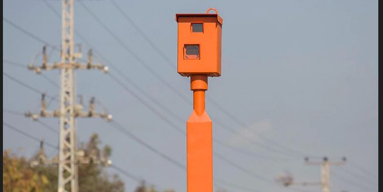
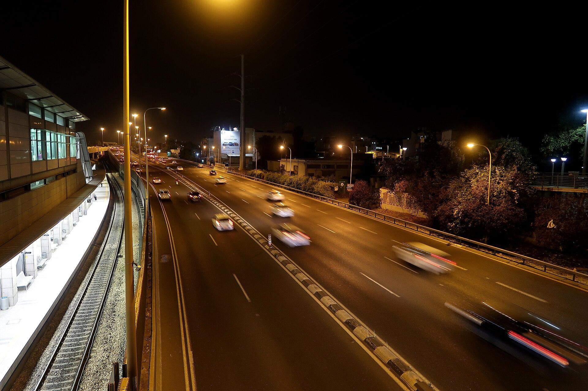

הדו״ח מגיע.The ticket arrives.
מצלמה, שוטר או הזמנה לדין. הכול מתחיל בדף אחד.A camera, an officer or a court summons. It all starts with one page.
קונספט לדוגמה שנבנה עבור עו״ד משה קלברינו · זה אינו האתר הרשמי של העסקA sample concept built for Moshe Calabrino, Adv. · This is not the business’s official website

עבירות תעבורה, דוחות וייצוג בבית המשפט לתעבורה. משנת 2004, מקריית אתא.Traffic offences, tickets and representation in traffic court. Since 2004, from Kiryat Ata.

מצלמה, שוטר או הזמנה לדין. הכול מתחיל בדף אחד.A camera, an officer or a court summons. It all starts with one page.
קוראים את הדו״ח ואת הראיות, ופורשים את האפשרויות. ההחלטה שלכם.The ticket and the evidence are read and the options laid out. The decision is yours.
ייצוג בדיון, מול התביעה.Representation at the hearing, facing the prosecution.
ליווי לאורך ההליך, עד שהתיק נסגר.Alongside you through the proceedings, until the file is closed.
“ניכר שמשה עושה את עבודתו גם מתוך תחושת שליחות וקדושת המשימה להגן על מי שאין ידו משגת”
“It’s clear that Moshe also does his work out of a sense of mission, to defend those who can’t afford it”
מהדו״ח הראשון ועד כתב אישום, הכול בתחום התעבורה.From a first ticket to an indictment, all of it traffic law.
מהירות, תמרור, חגורה ועוד.Speed, signs, seat belts and more.
מצלמות רמזור ודוחות.Red-light cameras and tickets.
נקודות, פסילה ושלילה.Points, bans and suspensions.
הליך פלילי בתעבורה.Criminal traffic proceedings.
דיונים, חקירות נגדיות וטיעונים.Hearings, cross-examinations and arguments.
האם להתנגד לדו״ח, או לשלם.Whether to contest a ticket, or pay it.
הודעה לעו״ד משה קלברינוMessage to Moshe Calabrino, Adv.
אל: וואטסאפTo: WhatsApp 050-278-0960
בכישרון רב ובעזרת חקירה נגדית מרשימה הצליח עו״ד קלברינו לגרום לפרקליטות לסגת בה ולמשוך את כתב האישום לחלוטין, וזאת עוד בטרם החלה פרשת ההגנה במשפט.
With great skill and an impressive cross-examination, Adv. Calabrino got the prosecution to back down and withdraw the indictment entirely, before the defence had even opened its case.
עורך דין תותח, שירות יוצא מן הכלל, טיפל לי בדוח תנועה בזמן הכי מיטבי שיש עם תוצאות מעולות. מומלץ ביותר למי שמעוניין להשתמש בשירותיו.
A brilliant lawyer, exceptional service. He handled my traffic ticket in the best possible time, with excellent results. Highly recommended to anyone who wants his services.
ניסיתי לברר אם יש כדאיות להתעסק עם עבירת אור אדום. קיבלתי הסבר קצר קולע ואדיב שאין טעם לפתוח הליך כי זה לא יעזור.
I tried to find out whether a red-light offence was worth fighting. I got a short, to-the-point and polite explanation that there was no point opening proceedings, because it wouldn’t help.
אדם מסור לייצג את הלקוח כולל מאבק כנגד כול הסיכויים ולהביא את התוצאה הטובה ביותר. מקדיש זמן רב והרבה מעל שכר הטירחה שמשולם.
A man devoted to representing his client, including fighting against all odds to bring the best result. He gives a lot of time, far beyond the fee that is paid.
תמיד הציג בפני את כל האפשרויות בצורה ברורה, אך השאיר לי באופן מוחלט את ההחלטה הסופית בכל צומת בתהליך כולו.
He always set out all the options clearly, but left the final decision entirely to me at every junction of the whole process.
לא תמיד. לקוח שפנה בעניין רמזור אדום כתב שקיבל “הסבר קצר קולע ואדיב שאין טעם לפתוח הליך”.Not always. A client who asked about a red light wrote that he got “a short, to-the-point and polite explanation that there was no point opening proceedings” (translated).
משנת 2004, דיני תעבורה ועבירות תעבורה.Since 2004: traffic law and traffic offences.
אפשר לכתוב למשה בוואטסאפ, 050-278-0960, ולצרף צילום של הדו״ח.You can write to Moshe on WhatsApp, 050-278-0960, and attach a photo of the ticket.
ברחוב האורן 44 בקריית אתא. ראשון עד חמישי 7:30–19:00, שישי 7:30–13:30, שבת סגור.At 44 HaOren St, Kiryat Ata. Sunday to Thursday 7:30–19:00, Friday 7:30–13:30, closed on Saturday.